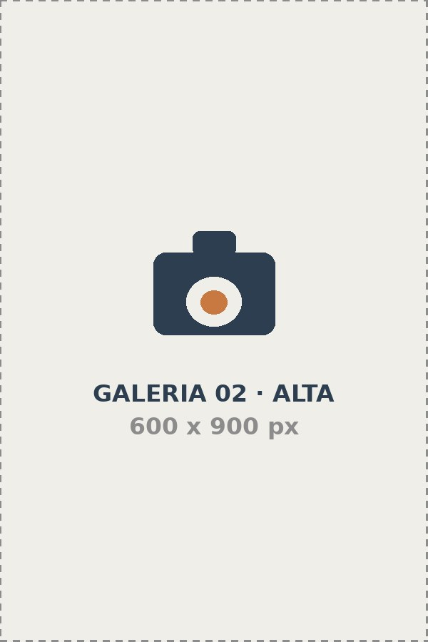

Galería
Una selección de lo que hemos fotografiado entre el 2014 al 2026.
480
Secciones realizadas
12
Años de trayectorias
36
Marcas acompañadas
98%
Volvería a contratarnos
Explorar por categoria
Cada enlace lleva a su sección dentro de su misma página.
Todo el trabajo
